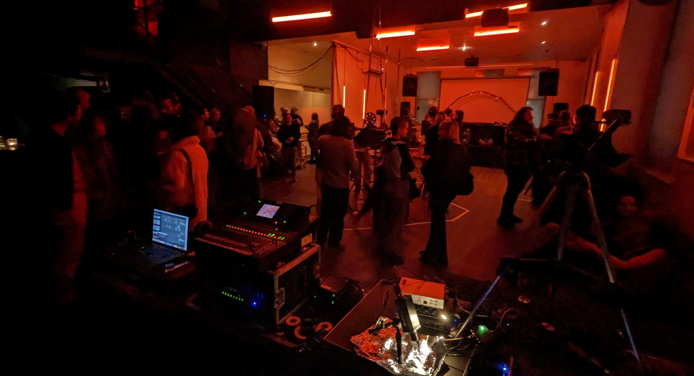
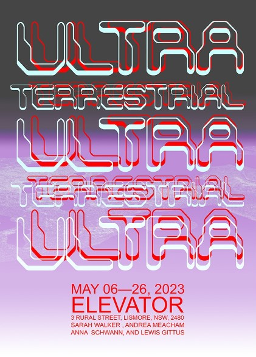
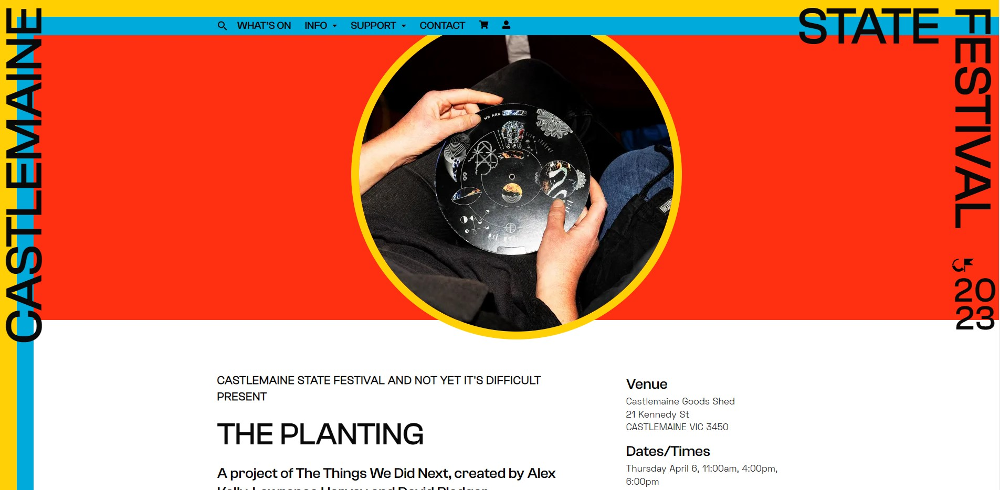
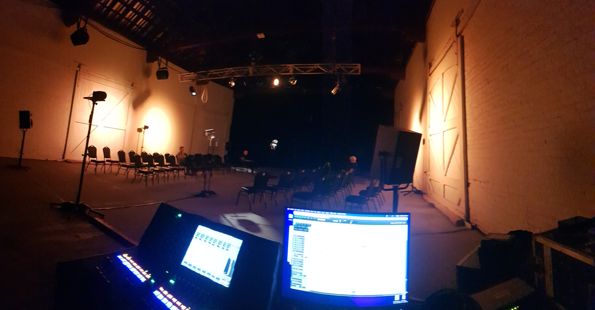
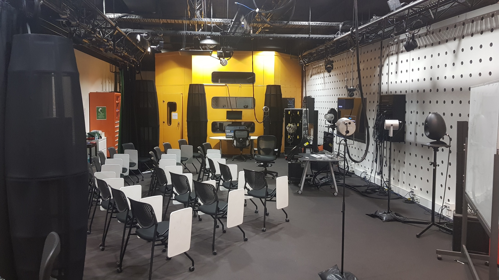
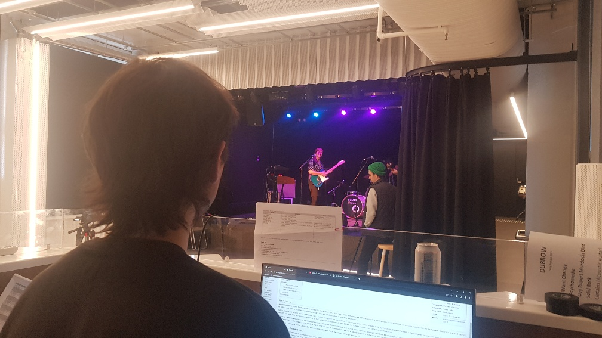
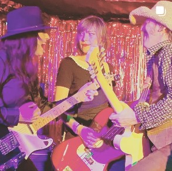
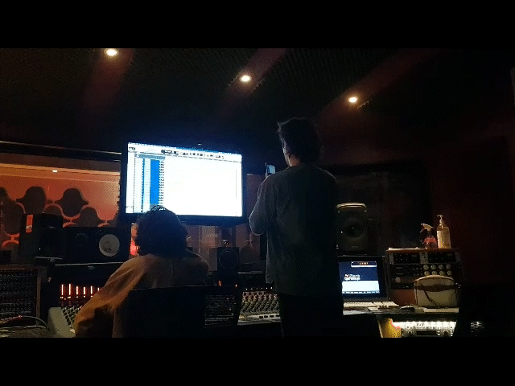
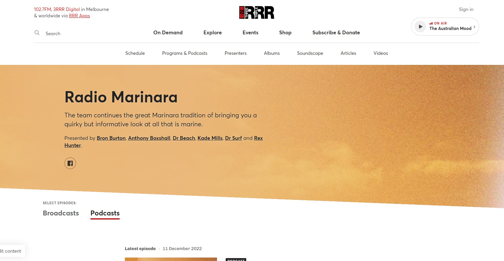
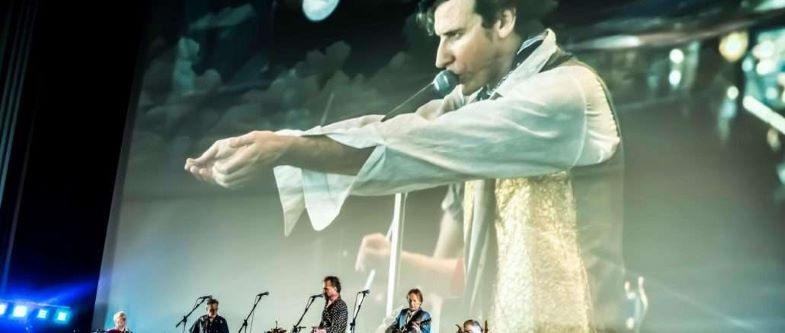

Trip to Paris "Fake Friends" (2023)
Trip to Paris-'Fake Friends' now on Youtube!
Record sessions with Paris & Pauly C throughout the end of 2022 were a fun time. Engineering vocals, bass, and percussion in RMIT's SSL studio. I remember one particular mic from the cabinet sounding far better with Paris than any other; and two more songs being part of the project..
Paul coming through with the mix!
Glenn Bennie feat. Ricky Maymi "T-8 Escape" (2023)
'Silver Baby' now on Glenn's bandcamp ->HERE.

Thanks again John, Ricky, and Glenn. Looking forward to hearing more!
DOGMILK X STARLINGS "Expanded Cinema" (2023)
STARLINGS SPATIAL SOUND pair up with experimental filmmakers DOGMILK FILMS to serve a steamin' hot night of Expanded Cinema performances @ MISCELLANIA.
Split into three performances, the Starlings Spatial Sound collective each preparing an acousmatic diffusion piece to perform live to accompany their Dogmilk counterparts.
Ingredients for the night were as follows:
- Josh Peters + John Hewison
- Lisa Rae Bartolomei + Jordan James Kaye (Linktree)
- Gillian Lever + Don Gray (Webpage)
- 5x 16mm projections
- 1x Steel sculpture
- 5x projections screens
- 1x LED screen
- 14x speakers (Including 5x Genelec 1032a's, 4x 12" Miscellania PA's, 2x Coda Tube C5, 2x JBL CRT, and 1x 10" HK Sub)
- Hardware video synthesizers to taste
- 6 heads on a silver platter
Check out some photos taken on the night HERE by Paddy Hay (instagram)
Sarah Walker "Jump Scare" (2023)
Revenge of the Final Girl, harnesses the torturous power of the horror soundtrack.
Sarah Walker is a Naarm/Melbourne-based writer, artist and photographer. 'Jump Scare' is having its first outing in 'Ultra Terrestrial' at @elevator_ari in Lismore NSW. Working with anticipation and anxiety and horror soundtrack tropes and effort and failure and fucked up ASMR. Hooray!

Recording sessions @ RMIT's SIAL Sound Studios. Using the Neumann KU100 Dummy Head (Norman) as a binmaural microphone, prop peice, and acting cast member! Sarah performance included multiple instruments from violins to plastic tubing. Ultra cool poster below.
You can find more of Sarah's art here: https://sarahwalker.work/art
"The Planting" (2023)
A project of The Things We Did Next, created by Alex Kelly, Lawrence Harvey and David Pledger - 'The Planting' @ Castlemaine State Festival.
What if you could hear a broadcast from the future? The Polykeepers of Time are Archivists of the Future who have data-scraped Time in 2029 and discovered key interviews with Indigenous landcare practitioners. This ‘speaker orchestra’ was conceived by Castlemaine-based filmmaker and climate-justice activist Alex Kelly, and sound designer Lawrence Harvey.
Installation of 12.2 channel 'speaker orchestra' at Castlemaine State Festival. Comprised of three rings of speakers, 2x sets of 4 speakers creating the outer perimeter, and 1x set of 4 speakers positioned centrally in the room with 2x Subs in opposite corners. Files running from Reaper through a Yamaha CL1 mixing console and Dante network to 4x Shure network interfaces.
SIAL Sound Studios (2023)
Sound Technician @ RMIT's SIAL Sound Studios
SIAL Sound Studios is RMIT University’s leading centre for sound based research, teaching and practice. Creating immersive sound designs for music performance, virtual environments, installations and exhibitions, urban spaces and collaborative design projects.
Thank you to John Phillips, Simon Maisch and Lawrence Harvey. Very excited to get into multichannel sound, ambisonics, spacialised audio and everything else SIAL related!
"The Job" (2023)
Short film by Tatiana DoroshenkoTatiana’s short films and screen works have seen audiences in Australia, Europe and America. Screening highlights include European Media Arts Festival (EMAF) 2007, VAD Spain 2006, Transmediale Berlin 2002, Aspen, Palm Springs (2007), the Santiago Biennale 2003, HollyShorts, MIFF and St Kilda Film Festival.


Work on the film included production in 5.1 @ RMIT Studios using Protools, foley recording, ADR, and creating sound design elements throughout the film. Initially drafting a rough mix for a test screening Tatiana ~ OCT, work on the film proper ramped up over christmas, after Tatiana's directors breif early DEC. Managing to run out of voices on our Protools system, we had to get creatively manage our tracks/buses/routing, making sure not to use native and DSP plugins on the same tracks, and keeping the session as clean as possible. Using all sound recordings provided by Sarah Tarr, some scenes required their audio completely built using recorded foley and sound design (Approaching office building + Walking up stairwell). Mixed by Andy Evans.
Thanks to John Philips and project wingman Pauly C!
Glenn Bennie & Ricky Maymi Project - Untitled (2022)
Glenn Bennie of undergroundLOVERS, latest project collaborating with Ricky Maymi of BJM.
Running a studio session recording guitar overdubs. Tracks imported/created from/in Logic by Glenn.
Glenn Bennie BandCamp - FaceBook - Ricky Maymi Twitter

Ricky used an Ebow on most tunes to create thick drones / textures to pair with Glenn's material. I kept being reminded of The Pastels re-mix album 'Illuminati', but noisier! Micing included 2x close mics used for alternate tones(Royer 122 and SM58), and 1x mic on the far side of the studio facing the glass capturing the only reflections available in the very dead tracking space. Glenn prodcued most of the sounds using Logic's basic tools/instruments/drummers, as well as a new Behringer synth/sequencer.
Songs headed to Simon Polinski for Mix/Master! Simons Discogs here.
JazzLab - Live Sound
Casual Sound @ TheJazzLab


Thanks to Michael Tortoni, Jeremy Jankie, Tok Norris, and Kristjan!
Cambodian Space Project (2022)
The Cambodian Space Project (CSP) is recognised as one of the few truly Aussie Asian hybrids in contemporary music. Since 2009, it has been at the forefront of an astonishing cultural revival in Cambodia, since singer Channthy Kak & musician Julien Poulson teamed up in Phnom Penh, to sing back to life the lost divas & rock legends of Cambodia’s golden age of music, all but wiped out by the genocidal Khmer Rouge regime. The Cambodian Space Project sound is definitely for the 21st century, mashing tradition with rock’n’roll, rare groove, soul, & trippy visual spectacle. They perform re-imagined Khmer classics, alongside originals speaking of Cambodia today like Not Easy Rock’n’roll, Have Visa No Have Rice, and Whisky Cambodia.
Running 2x record sessions in RMIT's Neve studio and tagging along for a trip to Headgap with Julian Poulsen and the gang.
CambodianSpaceProject - HeadGap


Neve Genesys console and a some classic outboard gear into Protools, tracking everyone together live, but isolating the bass and guitar as much as possible for later recording sessions at HeadGap Studios.
Look out for their ipcoming release. A favourite track was a dub groove about a giant snail making its way across the bar. The second record session had Julian ripping overdubs for nearly 8 hours straight. CSP's crazy schedule meant someone was napping whenever possible, usually in the control room with monitors up too.
Sorry I missed the last weekend Julian and thanks John! Was a great time. សូមអរគុណ!. Alter ego Pauly C on the scene.
"Songs Fest" @ Music Market (2022)
Content rceation weekend at Collingwood Yard's Music Market
Tasked with live multitracking 8x acts over the weekend for Craig/ZenArcade.
Desk: Yamaha QL1. Capturing audio straight from the networked RIO3224-D2 stage box into Reaper. A bit of pre-production to be done, getting Dante Virtual Soundcard and Dante Controller connected to the desk and then recording into Reaper.
Artists: Charles Jenkins, Little Wise, Nick Batterham, Hamish Cowan, Chris Dubrow, Bec Sykes, Joyce Prescher, Sianna Lee.
Henry Hugo And The Fallen Angels (2022)
Runnning a record session in RMIT's Neve studio with the band, getting tracks down for their upcoming album. With the usual suspects Kristjan and Paul. Recording everything through the Neve Genesys 1073 pre amps with little to no eq/comp, a very clean signal. And it sounded great. Request by Henry to record at 44.1kHz for a legacy version of Protools! Can't wait to hear it.
 Band: Henry Hugo (Electric Guitar), Helen Cattanach (Bass), Lisa Wood (Electric guitar), and Marni Newman (Drums)
Henry Hugo and the Faleen Angels Instagram & BandCamp.
X-Aspirations @ The Tote (2022)
X-Aspirations was recorded in a single afternoon in 1979 at Trafalgar Studios in the band's hometown of Sydney and released the following year on the band's own label. In 2022, X were celebrating the 40th (ish?) anniversary of the classic album, “X-Aspirations”, playing the whole album in it's running order.
Another live multitrack recording for Craig Kember / Zen Arcade. X played their album "Aspirations" in full for a coinciding Tote 40th anniversary night.


Write-up by Ronald Brown can be found here: i94 Bar: FORTY YEARS AFTER "X-ASPIRATIONS", THERE'S NOTHING LIKE X AT THE TOTE

The house desk (Digico S21) had been re-patched locally earlier that day and Dazza's mic set-up was almost bare bones - so there weren't any luxuries left for the capture - however, the recordings came out sounding pretty nice, considering the sound coming off stage. See linked article for more.
This was the last live capture using Protools into a macbookpro. While a wasted punter/dickhead critiqued Dazza's work, the unfounded negativity that made no dent on Daz found another way. At the very same moment, stopping record, an error popped up in tools and we lost the BV track. Sorry about that Craig!
Tracks Live / Reaper has been much sturdier running from the macbook since.
ColourWheel - Test Run @ The Capitol (2022)
Jim Morginie: in THE COLOUR WHEEL, we explore the attempts over history to prove the 'connection' between music and colour - examine the art, music, and theories of Kandinsky, Klee, Schoenberg, and Bowral born artist Roy de Maistre. In the early years of the 20th century there were terrific advances in physics with the Special and General theories of Relativity and the advent of quantum mechanics, uncovering the very building blocks of matter which totally changed the way in which humans observed the world. Around the same time, a similar revolution took place in both Muisc and Art, along with a desire to deconstruct formality and structure. THE COLOUR WHEEL is performed by myself and an ensemble of electric guitar players and painters.
RMIT extra-curricular fun. Midnight Oil's Jim Moginie combines music and art in - 'The Colour Wheel', a guitar orchestra exploring the concept of synesthesia, putting the newly installed Capitol lighting system to good use.
In anticipation of the ColourWheel coming to The Capitol in 2023, a group of eager volunteers helped staff to put on three dry-run shows to assess the productions viability/kinks/potential.


ColourWheel BandCamp - ColourWheel Vimeo
Desk: Allen & Heath SQ6. 2x large subwoofers were brought in and we patched into the Capitol's PA system. Testing the system with pink noise and an RTA showed promise. But when pushed, the loud stage volume was causing problems. The PA being set up to recieve signal patched through a Q-sys network, was geared to accomodate lectures and speakers, and not so much a guitar orchestra \m/,. A run through was even performed without any FOH, though a little underwhelming. Hopefully the future performance has a system brought in, with delays set-up to achieve proper coverage to the very high and far seating to the back of the theatre.
3RRR - 'Radio Marinara' (2022)
PODCAST Producer
Live to air Sundays at 9am, The team continues the great Marinara tradition of bringing you a quirky but informative look at all that is marine.
Triple R volunteer, creating weekly podcasts for streaming on rrr.org.au/explore/podcasts/radio-marinara and other major platforms.
I am the Podfather now.
Nicole Halford & The Rose Limbs @ The Workers Club (2022)
A jazz/pop soul songwriter local to Melbourne Supported by her alt/R&B/pop-rock flavoured band.
Mixing at the Workers Club. Big square concrete rooms don't usually sound great, BUT NicoleHalfordandTheRoseLimbs sure did.

Love In Bright Landscapes @ The Astor Theatre (2022)
In May 2022, the Astor Theatre showcased a new documentary, Love In Bright Landscapes. The film celebrates the late David McComb of the Triffids. The Astor Theatre presented the film in a double feature, with a Q&A and a tribute concert after the showing. Snap Scene: Love In Bright Landscapes: A Tribute To David Mccomb, Astor Theatre, 15th May 2022
Through John Philips and Craig Kamber (Zen Arcade), helping Mark Barry set up stage mics, X32 desk, and PA system. 4 PA's and two subs - along with Roland Howards amp on loan used by JP Shilo that night - was more than enough volume to fill the theatre. Recording out of the X32 desk was an easy USB out, to laptop, capture using Tracks Live.
Later gave an incredibly awkward interview published on RMIT's student news page: Sound Production student shines in new documentary, the title is a little misleading..
Aardvark Music (2022)
Aardvark Music, is a Melbourne based not for profit organisation that provides song-writing and music opportunities for young people aged between 14 and 24 who have a passion or talent for music. Music therapists, musicians and youth mentors work with young people to write, record and perform original music together in groups while creating a community to stay connected to.

3x recording sessions with the Aardvark Music team in RMIT's SSL Studio.
Cool Pages to Check Out
Live Mixing, Live Multitrack Recording, Studio Record Engineer, Studio Mix Engineer (Music, Film, and Video), Sound Design
David Andrew Turner
Naarm / Melbourne, Victoria
turner.davidandrew@gmail.com